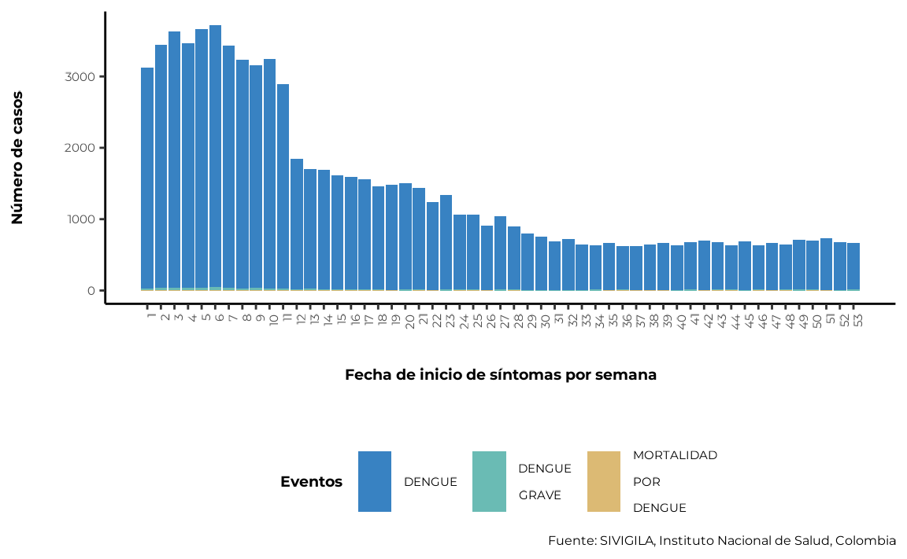
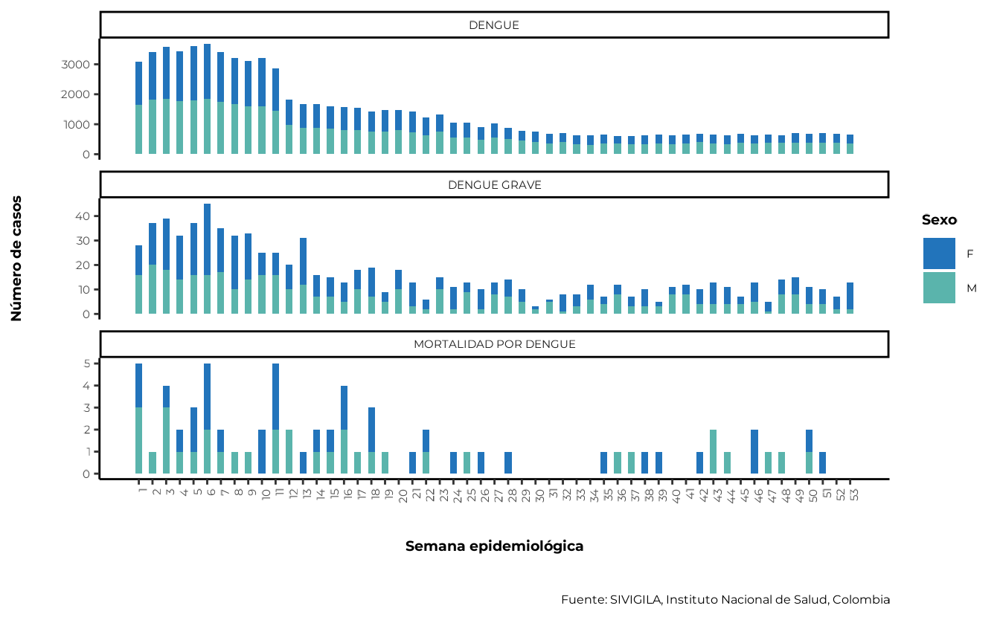
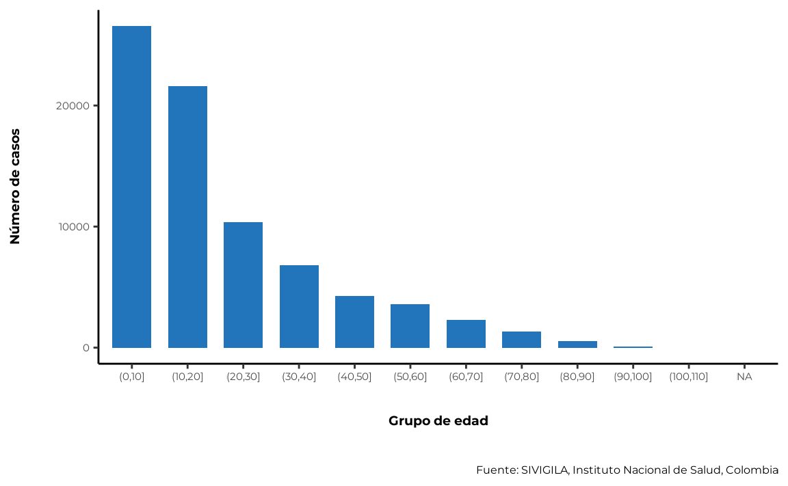
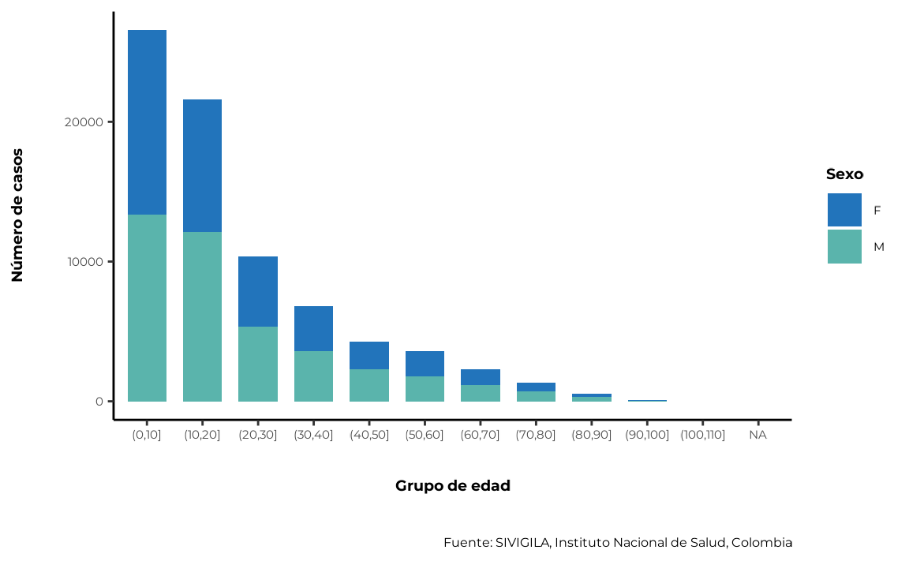
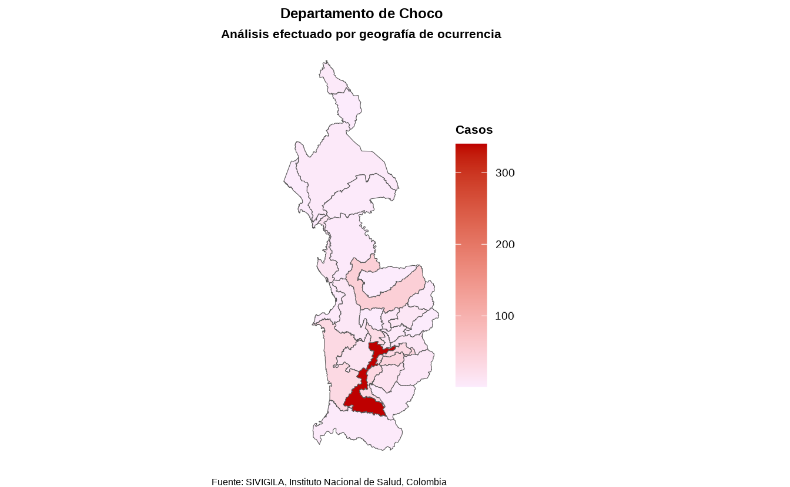

Below is a basic set of instructions for using sivirep
in the following scenarios:
- You have already created an
.Rmdfile and want to edit a report. - You want to perform custom analyses without using an
.Rmdfile.
1. Importing sivigila data
The SIVIGILA source provides historical data up to the most recent
closed epidemiological year. The closing of an epidemiological year
typically occurs in April of the following year.For example, if you are
using sivirep in March 2025, you will likely have access to
historical data up to December 2024 for most diseases, with a few
exceptions.
Before using the function, please check the available diseases and years with the following command:
list_diseases <- list_events()Once you have decided the disease and year you want, you can use
import_data_event to import the disease data from SIVIGILA
using the disease or event name and year (you can download data for
multiple years).
disease_data <- import_data_event(nombre_event = "dengue",
years = 2020,
ruta_dir = tempdir())💡 Tip - Avoid time delays when importing data
sivirepis meant to assist with access to SIVIGILA source. The process of downloading disease information may take a few minutes depending on the size of the dataset. To avoid re-downloading the same data each time, you can use thecache = TRUEparameter in the functionimport_data_event.
💡 Tip - Download disease data for multiple years
With the functionimport_data_event, it is possible to download data for multiple years. For example, if you want to download data for 3 years of a particular diease, you can use theyearparameter as follows:import_data_event(data_event = "dengue", years = c(2021, 2019, 2018), cache = TRUE)You can also specify non-consecutive years:import_data_event(data_event = "dengue", years = c(2024, 2018, 2013), cache = TRUE)
2. Cleaning sivigila data
SIVILA data is a highly trusted official source of information with ISO certification of data quality. Nevertheless, some potential outliers or anomalies may be present in the data, requiring additional cleaning.
sivirep provides a wrapper generic function called
limpiar_data_sivigila, which helps identifying and
correcting errors, inconsistencies, and discrepancies to improve the
quality and accuracy of datasets. This process may include tasks such as
removing duplicates, correcting typographical errors, imputing missing
values, and validating entries. It can also involve cleaning improbable
dates, standardizing geolocation codes, harmonizing column names and age
categories, all in accordance with the disease protocols defined by the
INS.
cleaned_disease_data <- limpiar_data_sivigila(data_event = disease_data)These may include internal functions such as:
-
limpiar_edad_event: function that cleans and standardises the column names of SIVIGILA data. -
limpiar_edad_event: function that cleans and standardizes ages from disease data to years, according to INS clasification. -
limpiar_val_atipic: function that cleans outliers from disease data. -
limpiar_fecha_event: function that cleans and standardizes dates from disease data. -
estandarizar_geo_cods: function that standardizes the geographical codes of the disease data, according to DIVIPOLA codification. -
convert_edad: function that converts ages to years according to SIVIGILA measurement units.
You may want to use these functions individually or simply use the generic wrapper cleaning function.
3. Filter cases
sivirep provides a function called
geo_filtro, which you can use to filter disease data by
department or municipality . It allows you to create a subnational
report.
filtered_disease_data <- geo_filtro(data_event = cleaned_disease_data,
"Choco")4. Temporal distribution of cases
In sivirep the temporal distribution of cases is defined
by the two variables: symptom onset date and notification date. For each
of these variables, there are specialised functions to group the data
and generate the plots.
4.1. Grouping data by symptom onset at the desired temporal scale
To generate the distribution of cases by symptom onset date, it is
necessary to group the data by this variable. sivirep
provides a function called group_onset_symptoms for this
task.
cases_onset_symptoms <- agrupar_fecha_inisintomas(data_event =
cleaned_disease_data)💡 Tip - Get the first n months with most cases
When building a report section or analysing this data it can be useful to get the months with the most cases. Insivirepyou can use the functionobtener_meses_mas_casosto get this information.
The graph that allows to visualise this distribution must be
generated with the function plot_fecha_inisintomas. You can
customise the plot’s ticks by day (dia), month
(mes) or epidemiological week (semanaepi), as
shown below:
plot_fecha_inisintomas(data_agrupada = cases_onset_symptoms,
uni_marca = "semanaepi")
5.1. Sex variable
When analysing or reporting disease data, it is often necessary to determine the distribution of cases by gender or sex. However, the SIVIGILA source only records sex.
sivirep provides a function that groups and computes
percentages by sex automatically after the cleaning process.
cases_sex <- agrupar_sex(data_event = cleaned_disease_data,
porcentaje = TRUE)Also, sivirep provides a function called
plot_sexto plot this distribution:
plot_sex(data_agrupada = cases_sex)
To generate the distribution of cases by sex and epidemiological
week, you can use the agrupar_sex_semanaepi function
provided by sivirep:
cases_sex_epiweek <- agrupar_sex_semanaepi(data_event = cleaned_disease_data)The corresponding visualisation function that provides
sivirep is plot_sex_semanaepi:
plot_sex_semanaepi(data_agrupada = cases_sex_epiweek)
5.2. Age variable
Age is an important variable to analyse, as it is a known risk factor for many diseases. Certain diseases and conditions tend to occur more frequently in specific age groups, and this distribution can help identify populations at higher risk and implement targeted prevention and control strategies.
sivirep provides a function called
agrupar_edad, which can group disease data into age groups.
By default, this function produces age ranges with intervals of 10
years. Users can customise different age ranges.
cases_age <- agrupar_edad(data_event = cleaned_disease_data,
interval_edad = 10)The corresponding plot function is plot_edad:
plot_edad(data_agrupada = cases_age)
5.3. Age and sex simultaneously
sivirep provides a function called
agrupar_edad_sex, which can group disease data by age
ranges and sex simultaneously and calculate the number of cases and
their percentages. Also, the age interval can be customised.
cases_age_sex <- agrupar_edad_sex(data_event = cleaned_disease_data,
interval_edad = 10,
porcentaje = TRUE)The function that sivirep provides to plot this
corresponding distribution is plot_edad_sex:
plot_edad_sex(data_agrupada = cases_age_sex)
6. Spatial distribution of cases
Obtaining the spatial distribution of cases is helpful to identify areas with a high concentration of cases, disease clusters and environmental or social risk factors.
In Colombia, there are 32 administrative geographic units (adm1) called departments.
sivirep provides a function called
agrupar_mpio which allows you to obtain disease data
grouped by municipalities of a specific department — in other words, the
department’s case distribution.
spatial_mun_dist <- agrupar_mpio(data_event = filtered_disease_data,
dpto = "Choco")There is also a function to obtain the case distribution across all
departments of Colombia, called agrupar_dpto:
spatial_dept_dist <- agrupar_dpto(data_event = cleaned_disease_data)Currently, with the function called plot_map the user
can produce a static map of Colombia with the distribution of cases or
incideces by departments and municipalities.
💡 Tip - Avoid delays when generating the map
It is necessary to download the shapefiles of Colombia to generate the map. To avoid re-downloading them each time, you can use thecache = TRUEparameter in theplot_mapfunction.
map <- plot_map(data_agrupada = spatial_mun_dist,
col_distribucion = "casos",
ruta_dir = tempdir())
map
💡 Tip - Get the row with most cases
When building a report section or analysing this data it can be helpful to know which sex, age, etc., has the most cases, insivirepyou can use the functionobtener_fila_mas_casosto get this information. This function works with any dataset that contains a column called"cases"by any level of aggregation.
7. Incidence
With sivirep, you can calculate incidence rates by
geography or sex using DANE population projections or population-at-risk
depending on event and data availability.
📑 Note: sivirep
does not include population-at-risk data for all events. However if you have this information, you can provide it using thedata_incidencia` parameter in each function.
7.1 Incidence by geography
You can calculate incidence by departments or municipalities of a
specific department using the calcular_incidencia_geo
function: